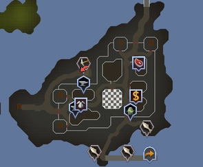
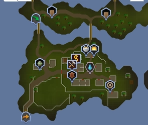

<div id="content">
<div id="article">
<div class="sectionHeader">
<div class="left">
<div class="right">
<h1 class="plaque">
12-July-2021
</h1></div>
</div>
</div>
<div class="section">
<div class="brown_background">
</div>
<div id="contrast_panel">
<div id="infopane">
<div class="title thrd">The Story of the outcast brothers

</div>
</div>
<div class="phold" id="nocontrols"></div>
<div class="actions" id="top">
<table>
<tr>
<td class="commands center">
<ul class="flat first-child">
<li><a href="./archives.html"> Up to Legacy Archive</a></li>
<li>
<a href="/"> Refresh</a>
</li>
</ul>
</td>
</tr>
<tr>
</tr>
</table>
</div>
<div class="" id="contentmsg">
<a class="msgplace" name="0"></a>
<table cellspacing="0" class="message jmod">
<tr>
<td class="leftpanel J-Mod">
<div class="msgcreator uname">
 
    Summer
    </div>

<div class="modtype">Website Developer</div>
<div class="msgcommands">
<br/>
</div>
</td>
<td class="rightpanel">
<div class="msgtime">
12-July-2021 10:55
<br/>
</div>
<div class="msgcontents">
<!-- Post goes right in here -->
<p>
    Time to head over seas to the town that is heavily taxed, Jatizso ("Yah-tizz-so"). 
    
    <br/>
<br/>

<br/>
<br/>


    Jatizso is one of the islands of the Fremnick Isles ruled by King Gjuki Sorvott IV. His name used by the field operatives is 
    Big daddy. The way to Jatizso is either crossing the bridge from Neitiznot or taking the boat from Rellekka. 
    
    <br/>
<br/>

    When making this update it was a group effort getting this audit list complete. Since the audit idea look so good for adding entire 
    areas I thought I would add it to this new's post.
 
    <br/>
<br/>
<!-- In this section I go on about the city itself and afterwards is when I mention other content.-->
<b></b>
<b><u>Drop Tables</u></b>
</p><ul>
<li>Sea Snake Droptables added</li>
<li>Sea Snake Hatchling Droptables added</li>
<li>Ice Troll Males Droptables added</li>
<li>Ice Troll Females Droptables added</li>
<li>Ice Troll Runts Droptables added</li>
</ul>
<b><u>Shops</u></b>
<ul>
<li><a href="../../../site/wiki/areas/Jatizso/keepa-kettilons-store.html">Keepa Kettilon's Store </a> was added.</li>
<li><a href="../../../site/wiki/areas/Jatizso/flossis-fishmongers-shop.html">Flosi's Fishmongers</a> store was added.</li>
<li><a href="../../../site/wiki/areas/Jatizso/contraband-yak-produce.html">Contraband Yak Produce</a> was added.</li>
<li><a href="../../../site/wiki/areas/Jatizso/weapons-galore.html">Weapons Galore</a> shop was added.</li>
<li><a href="../../../site/wiki/areas/Jatizso/ore-store.html">Ore Store</a> was added.</li>
<li><a href="../../../site/wiki/areas/Jatizso/armour-shop.html">Armour Store</a> was added.</li>
</ul>
<b><u>Npc Miscellaneous</u></b>
<ul>
<li>Fixed the Ice Troll Female Stats</li>
<li>Fixed the Ice Troll Male Stats</li>
<li>Fixed the Ice Troll Runt Stats</li>
<li>Added the Ice Troll Female Stats</li>
<li>Added the Ice Troll Male Stats</li>
<li>Added the Ice Troll Runt Stats</li>
</ul>
<b><u>Miscellaneous Additions</u></b>
<ul>
<li>Fixed Banker in Jatizso's location</li>
<li>Populated Jatizso's Dungeon Mine with Ice trolls and miners.</li>
<li>Added the music for the area</li>
<li>The guards now shout at each other from Neitiznot to Jatizso with Monty Python reference</li>
<li>Fixed all the gates around Jatizso</li>
<li>Added all examines for Jatizso</li>
<li>Added all correct dialogues for Jatizso npcs</li>
<li>Added Mord Gunners to his spot on the dock and made his sailing map work properly.</li>
</ul>
<br/>
<br/>

        And now we head over the bridge to the small village of Neitiznot (Nay-tizz-not)

        <br/>
<br/>

<br/>
<br/>

        In Neitiznot there are places to farm Yak for their hides and chop Artic Pines. The land is ruled by King Mawnis Burrowgar.
        The island is filled with beautiful resources and tons of npcs to talk to. This was also a group effort for this city as well and will 
        be listed similar to how Jatizso was.
        
        <br/>
<br/>
<b><u>Npc Additions/fixes</u></b>
<ul>
<li>Rebalanced the Yak's Drop tables</li>
<li>Rebalanced the Yak's stats</li>
<li>Added Default dialogue for Slug Hemliggsen</li>
<li>Added Default dialogue for Gunnar Holdstrom</li>
<li>Added Default dialogue for Jofridr Moderstatter</li>
<li>Added Default dialogue for Morten Holdstrom</li>
<li>Added Default dialogue for Trogen Konugarde</li>
<li>Added Default dialogue for Kjedelig Sigmundson</li>
<li>Added Default dialogue for Thakkrad Shieldson</li>
<li>Added Default dialogue for Fridleif Shieldson</li>
<li>Added Default dialogue for Lisse Isaakson</li>
<li>Neitiznot version of shouting guards has his options properly handled</li>
<li>Reduced the Yak spawns from 8 to 6</li>
<li>Yaks now moo like cows.</li>
<li>Yaks now hav ea unique interaction when items are used on them.</li>
<li>Added honor guards to the gates of Neitiznot</li>
</ul>
<b><u>Miscellaneous</u></b>
<ul>
<li>Geyser now can be used as a water source</li>
<li>Clay oven can now be cooked on</li>
<li>Added unlock triggers for the Volanic Vikings music track.</li>
<li>All ladders are now climable </li>
<li>All objects have a default handler </li>
<li>Raw yak meat can be cooked into regular cooked meat</li>
<li>Yak hair can be made into ropes</li>
</ul>
<br/>
<br/>
<b><u>Some of the North</u></b>
<ul>
<li>All Ice Troll Grunt animations are set correctly</li>
<li> Ice Troll Grunts are properly aggressive </li>
<li> Added all Ice Troll spawns to the island </li>
<li> Ice trolls and Honor guards now attack each other. </li>
<li> The island north of Jatizso is now multi combat. </li>
</ul>
<br/>
<br/>


        We have some more fixes that are unrelated to Jatizso and Neitiznot. So amazing that we have a new beautiful island to explore and take 
        advantage of!
        
        <br/>
<br/>
<b><u>More than just Jatizso</u></b>
<ul>
<li>Formatting improvements for Adventure bots.</li>
<li>Jail command no longer works on Admins. </li>
<li> Made the turn-in for Ned's Diary Medium Lumbridge </li>
<li>Fixed the Sophanem emote clue's text</li>
<li>Packet writeouts are now queued excluding dynamic packets</li>
<li>A sink in Port Sarim now correctly works as a water source</li>
<li>Rebalanced the Ice Warriors Stats.</li>
<li>Rebalanced K'ril and Zilyana drop tables. </li>
<li>Rebalanced Cockroach Worker's drop table.</li>
<li>Dagannoth Ranged and Dagganoth melee stat adjustments</li>
<li>Added Dagganoth correct examines</li>
<li>Fixed examine on combat bracelet.</li>
<li>Keldagrim's Stonemason is back up and running</li>
<li> House portal for Taverly and Relekka now have the correct examine.</li>
<li>Added proper Hard Clue Scroll ID to all previous dragon drop tables</li>
<li>Re-evaluated weights and drop rates for all items for dragons</li>
<li>Generally balanced the 'Nothing' drop rate for all dragons to 12%~14%</li>
<li>Added around 31,000* new UNIQUE names to Adventure bots.</li>
<li>Updated Rare Drop Table ( Authentic )</li>
<li>Bots now use the GE price from an item's config if no other price overrides are specified.</li>
<li>Banshees are no longer immortal</li>
<li>Admin command update : Edit bury command to make a news announcement</li>
</ul>
</div>
</td>
</tr></table>
</div>
<div class="actions" id="bottom">
<table>
<tr>
<td class="commands center">
<ul class="flat first-child">
<li><a href="./archives.html"> Up to Legacy Achive</a></li>
<li>
<a href="/"> Refresh</a>
</li>
</ul>
</td>
</tr>
<tr>
</tr>
</table>
</div>
</div>
</div>
</div>
</div>